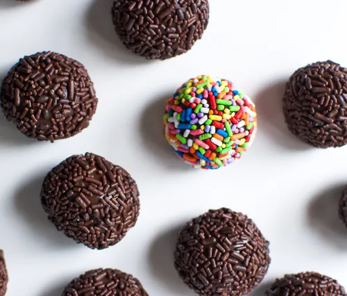

Brigadeiro
Ingredients
- 1 can (14 oz) sweetened condensed milk
- 2 tbsp unsweetened cocoa powde
- 2 tbsp butter
- Chocolate sprinkles or shredded coconut for coating
Instructions
- In a non-stick pan, combine sweetened condensed milk, cocoa powder, and butter.
- Cook over medium heat, stirring constantly until the mixture thickens and starts to pull away from the sides of the pan (about 10-15 minutes).
- Remove from heat and let it cool to room temperature
- Grease your hands with butter and roll the mixture into small balls.
- Roll the balls in chocolate sprinkles or shredded coconut to coat.
- Place the brigadeiros in small paper cups or on a plate.
- Chill in the refrigerator for a couple of hours before serving.
Yeah!My Chocolato balls
Back